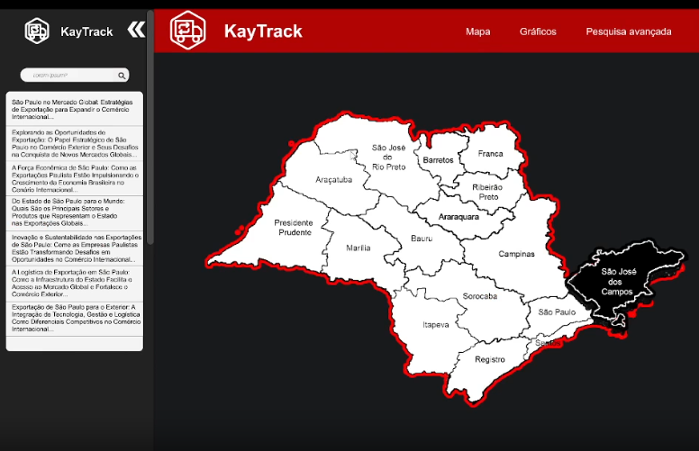

Projeto API 1º Semestre
Contextualização: O comércio internacional desempenha um papel fundamental no desenvolvimento econômico. Entretanto, embora esses dados sejam públicos, sua consulta e interpretação podem ser complexas devido ao grande volume de informações.
Objetivo: Desenvolver uma ferramenta de consulta e análise de dados de importação e exportação de São Paulo, permitindo pesquisas de forma intuitiva para democratizar o acesso aos dados públicos.
Metodologia: Levantamento, higienização e tratamento de dados públicos, garantindo organização e padronização para análise posterior.
Resultados: Ferramenta que permite análises comparativas eficientes, reduzindo barreiras técnicas e auxiliando na obtenção de informações estratégicas.
Minha atuação: Atuei diretamente na modelagem e tratamento dos dados. Adicionalmente, colaborei na criação de dashboards interativos voltados à geração de insights e valor estratégico para o negócio.
Soft Skills Desenvolvidas: Capacidade de síntese analítica, trabalho em equipe sob cronograma e empatia focada na experiência do usuário para democratização da informação.
VER REPOSITÓRIO